December 2024
Dit jaar was anders dan afgelopen jaren. Dit jaar hadden we één doel: een huis kopen. Om ons daar op te focussen, planden we geen grote dingen. We wisten dat het wel eens een lange zit kon worden, maar we waren er klaar voor.
Dit was 2024.
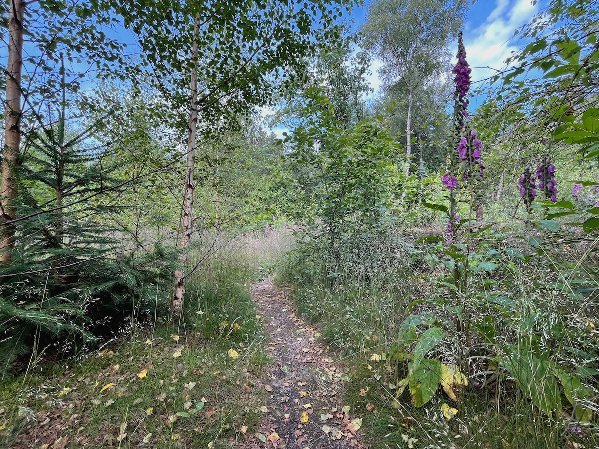
Dit jaar was het jaar van mijn 36-urige werkweek. Met mijn 30e verjaardag hakte ik een knoop door: ik ga geld inruilen voor tijd. Ofwel: ik ga minder werken. De vrije dagen die dat opleverde, spendeerde ik aan leuke dingen voor mezelf, zoals zwemmen in de vroege ochtenduren, nieuwe hobbies uitproberen of lange wandelingen door de natuur.
Door elke 2–3 weken iets leuks te plannen, was ik dit jaar ook voorbereid op de donkere dagen. Zo gingen we naar André Rieu (lachen), SOHN en het Metropole Orkest (mooi), een Dire Straits coverband (zeer matig), The 1975 (echt verrassend goed) en John Mayer (zoals elke keer de prijs dubbel en dwars waard). Ook was er een weekendje weg naar universiteitsstad Heidelberg, waar we veel hebben gewandeld, de red snakebite cocktail hebben ontdekt (kater gegarandeerd) en ook zeker Weinbergpfirsichlikör hebben gevonden (en hebben meegenomen).
Zo haalde ik succesvol de lente.
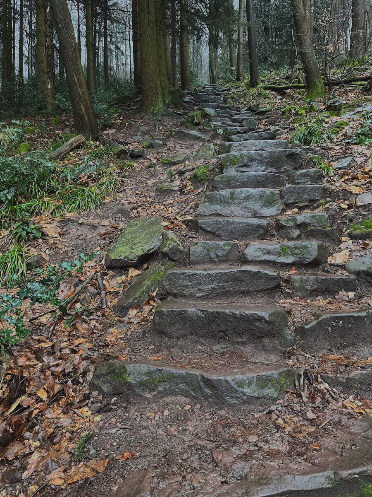
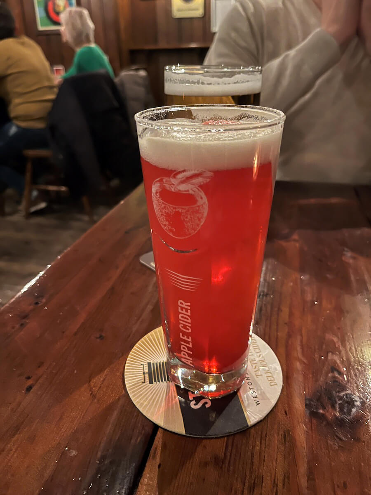
Na twee jaar huren wisten we het zeker: in de regio waar we nu zitten, willen we blijven. Alleen met een koophuis in plaats van een huurhuis. We bezochten een aantal hypotheekadviseurs om te zien wat wel en geen match was. En om ons budget te bepalen. We maakten een lijstje van must haves & nice to haves. Must haves: een grotere tuin en ruimte voor een werkplaats. De rest? Allemaal nice to haves.
We deden een bod op een sprookjeshuis, maar dat mocht ‘m niet worden. Dat was ook niet erg, want het was onze “oefenbezichtiging” en er moest sowieso teveel aan gedaan worden (geen riolering, Japanse duizendknoop — dat soort dingen). Vervolgens deden we dat riedeltje nog een keer bij een wat serieuzere woning die boven budget lag. Ik was niet onder de indruk, maar hij tikte wel alles aan. Letterlijk: alles. Zelfs de optionele sportkamer los van huis — die ver onderaan stond. De stijl was alleen.. niet mijn smaak, om het netjes te zeggen. Maar een likje verf doet wonderen. Er waren geen andere bieders, we deden een bod onder de vraagprijs (maar binnen budget) en.. ik schrijf dit jaarverslag vanuit dat huis.
Ergens denk ik dat we vies vet mazzel hebben gehad, vooral gezien de tijd en moeite die we erin hebben gestoken. We hadden onszelf wel goed voorbereid. Maar ook vies vet mazzel.
En dat allemaal voor de zomer.
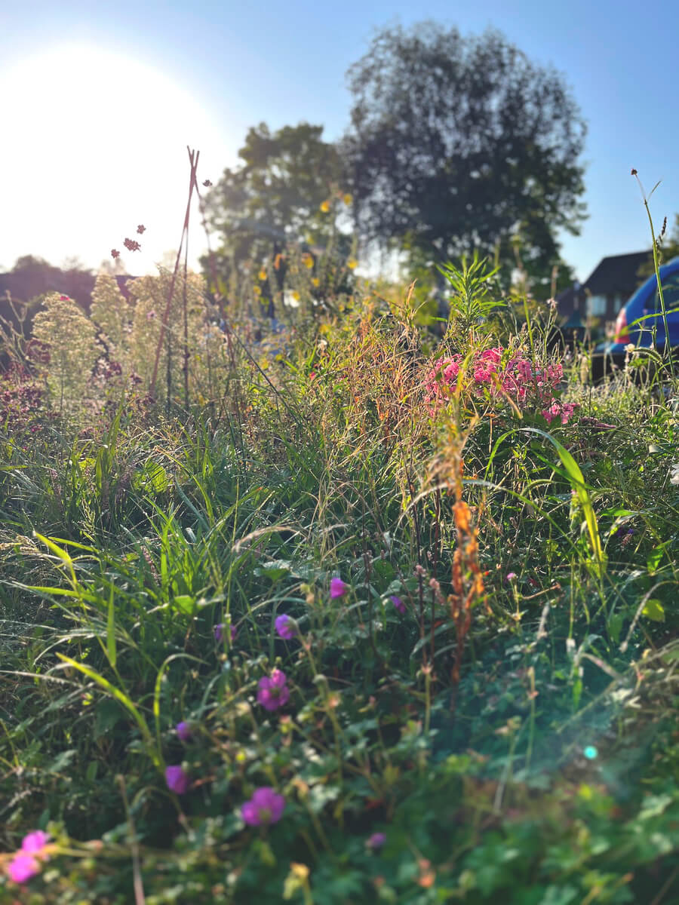
Want in de zomer stond er iets belangrijks op de planning: Taylor Swift. Vorig jaar hadden we een plan. Het doel: we gaan naar één van de shows. Welke? Maakt niet uit, zolang het maar binnen redelijke afstand is. We hadden ons aangemeld voor meerdere steden waarvoor we tickets mochten proberen te bemachtigen. Londen was als eerste. Dat lukte (na 40 minuten). Vervolgens hebben we alle andere buitenlandse steden aan ons voorbij laten gaan en zijn we voor Amsterdam gaan proberen. Dat lukte wonderbaarlijk genoeg ook (binnen 2 minuten). Dat was juli 2023. Volgende uitdaging: tot eind juni 2024 overleven zonder spoilers te zien.
Voor Londen hadden we een citytrip geboekt. Twee dames in de auto naar Brussel-Zuid, met de trein naar de stad, waar ons een (relatief) goedkoop doch centraal gelegen hotel stond te wachten zodat we na de show met de metro snel en veilig naar onze hotelkamer konden komen. Tijd voor avontuur.
We strompelden het metrostation van Gloucester Road uit richting ons hotel in Kensington. We keken voetbal bij The Garden Gate en liepen Hampstead Heath op tijdens zonsondergang. We shopten in de enorme Westfield Mall, waar nauwelijks iemand was. Er waren drankjes in Kingly Court en een warme Reuben bagel in de ochtend (iets wat ik niet dacht dat ik nodig zou hebben in het leven, maar nog regelmatig aan terugdenk). En toen begon het feest.
In het kort: de spoilers ontwijken was het waard. Ook met onze goedkoopste tickets vanaf de tweede ring (Wembley, vak 502) hadden we perfect zicht op het totaalplaatje en —dankzij de enorme schermen op het podium— perfect zicht op de show. Het dak was open, de wind was fris en het publiek was luid. Maar wat een show. Wat een performance. Wat een setlist. En wat is het leuk om al je favoriete nummers met meer dan 86.000 andere fans mee te zingen.
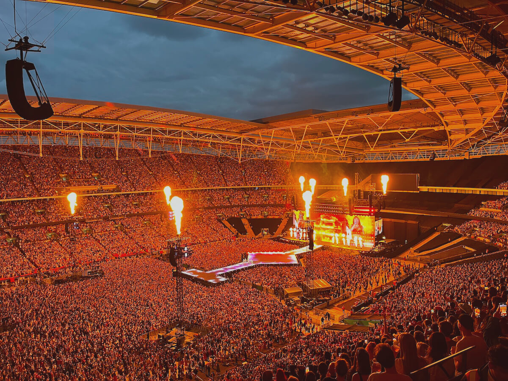
Een week later zat ik bij Ben Howard in de Vereeniging in Nijmegen. Iets andere vibe, maar ook erg van genoten.
Je kunt het van alles noemen. Onzin, geldverspilling, overkill — noem maar op. Maar exact twee weken na Londen zaten we met vier personen op de tweede ring van de Arena (vak 420). Dezelfde plekken als in Wembley, maar omdat het stadium de helft kleiner is, zorgden dezelfde plekken voor nóg beter zicht op het podium. Ook al hadden we de show net gezien, was het de moeite waard. Niet alleen vanwege de extra mensen met wie we waren, maar ook omdat we wisten wat er ging gebeuren en we dit keer op de details konden letten. Het bleef voelen alsof dit haar tiende show was en ze er alleen voor ons stond die avond (het was haar 111e show). Wat een superkracht is dat zeg.
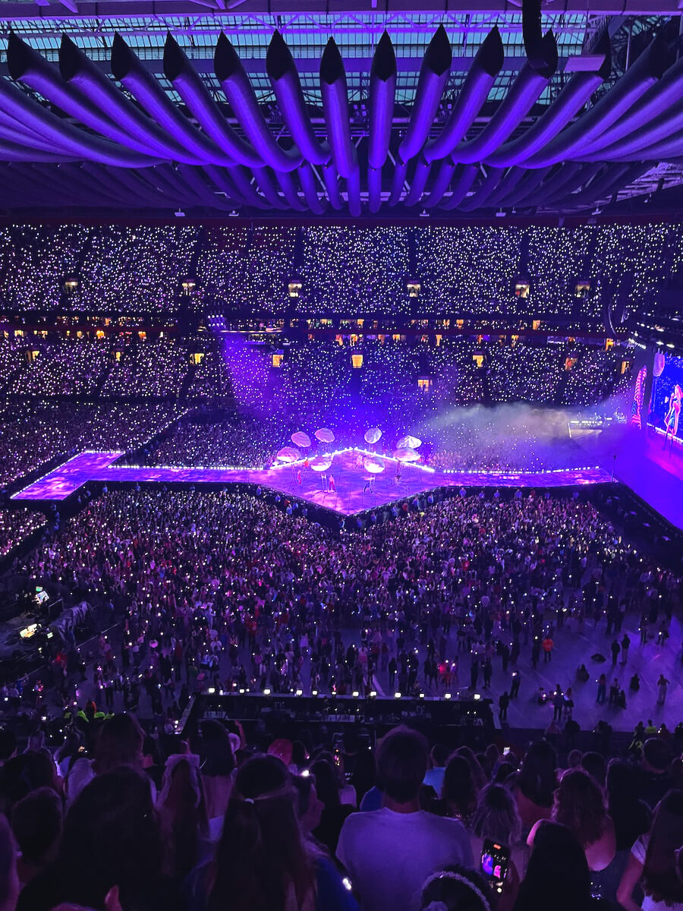
Eerder dit jaar was er een hersengolf. “New York was zo leuk, hadden we alles wel gezien?” Het antwoord was “Nee”. Waarop de vraag was: “Moeten we dan niet terug?” Dat antwoord was “Ja”. Eind september vlogen we daarom terug naar New York om de stad nog eens tot ons te nemen. Vanuit een Brooklyn townhouse gingen we op pad om nogmaals te genieten van de stad, het eten, de sfeer, de honkbalwedstrijden, het eten, de winkels, de parken, de architectuur en —had ik deze al genoemd?— het eten. Met nieuw op de lijst: herfst in Central Park, een tour door de Brooklyn Brewery, de lekkerste Napolitaanse pizza sinds Napels (Eataly Downtown), het 9/11 Museum, spicy noodles, verse custard buns en tickets voor Global Citizen Festival (met Ed Sheeran, Jane Goodall ❤️ en Post Malone). Het weer zat niet mee, maar het eten gelukkig wel.
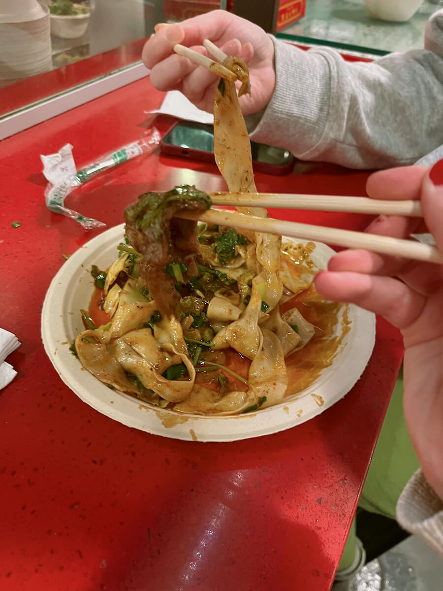
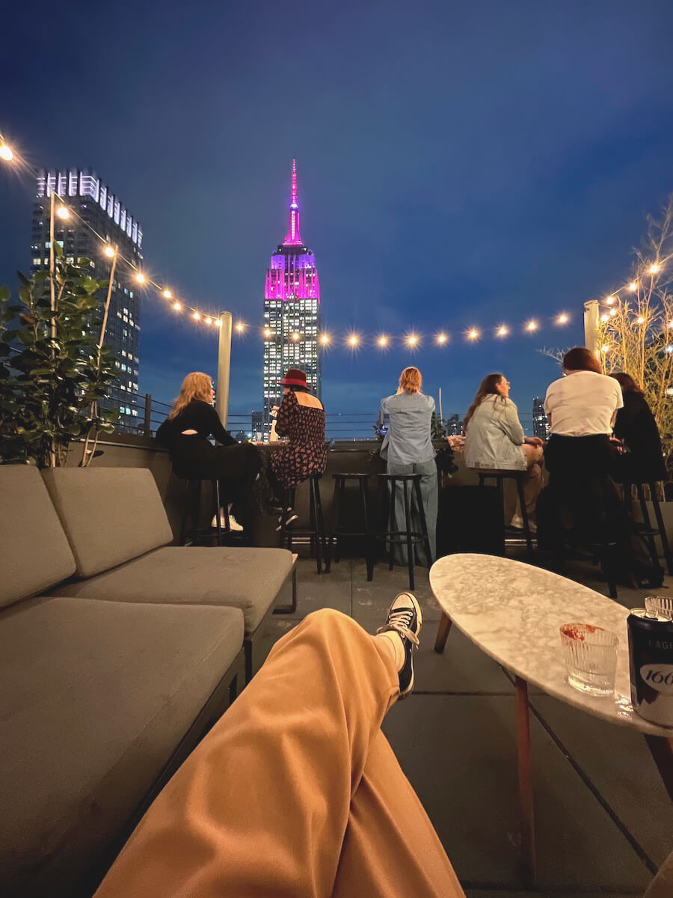
Wat dit jaar niet op de bingokaart stond, was een nieuwe baan. Als souvenir van Taylor Swift in de Arena kreeg ik corona mee naar huis. Terwijl ik in bed lag te ijlen, dacht ik: “Waarom ben ik zo ongelukkig?” Wat vreemd was, want ik was letterlijk net verhuisd en had net mijn favoriete artiest twee keer zien optreden. Terwijl ik de gedachte over de zomer heen liet bezinken, kwam ik erachter: het is mijn werk wat me dwarszit. En dat terwijl het hartstikke goed ging. Maar ik wil focus, een vast team en het effect van mijn werk zien. Na bijna zes jaar voor agencies te hebben gewerkt, vind ik het wel even goed. Dus ik ging op pad voor een nieuwe baan. En dat ging allemaal vrij snel. Eind oktober reed ik zonder laptop weg uit Amsterdam. In november was ik vrij. En begin december startte mijn nieuwe baan.
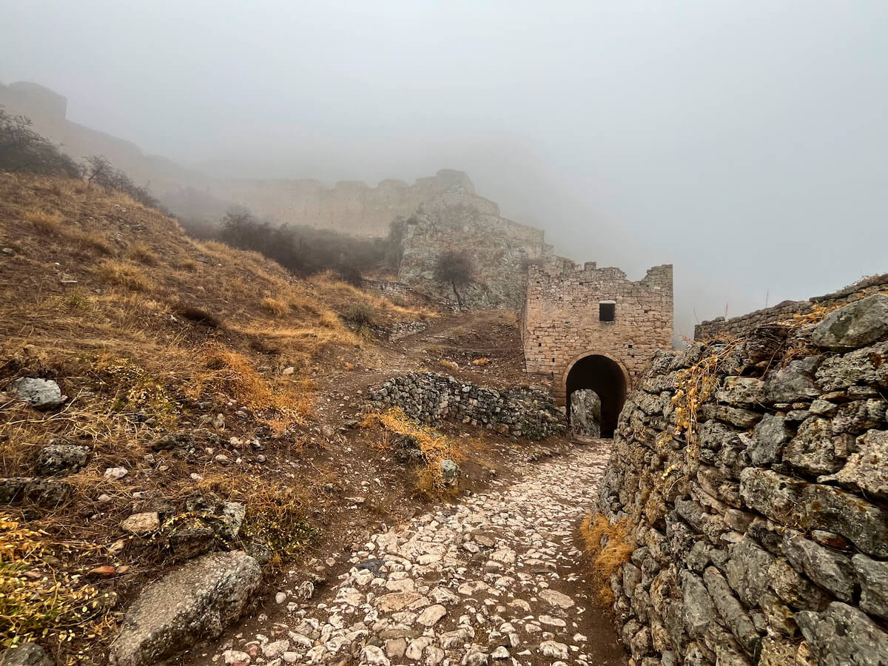
Omdat ik dit jaar wat meer tijd had vanwege mijn 36-urige werkweek, maakte ik het ook een doel om wat meer hobbies uit te proberen. Iets waar ik niet de beste in ben, want ik heb meer aanleg voor het verzamelen van hobbies dan het daadwerkelijk uitvoeren. Maar het ging als volgt.
Om mezelf uit te dagen en mijn kennis weer op te frissen, ben ik dit jaar na 15 jaar weer op pianoles geweest. Ik twijfelde, maar had een stok achter de deur nodig om daadwerkelijk het pianospelen op te pakken. Het doel? De liefde voor de toetsen weer terugvinden, hulp met motivatie en hulp met het vinden van “intermediate” stukken (ik zit op dat punt waar de lesboeken ophouden). Bij de lokale muziekschool plande ik daarom elke twee weken een serieuze, klassieke pianoles in. En dat heb ik geweten. De lessen als stok achter de deur werkten, hulp bij het vinden van stukken is ook zeker gelukt, maar voor mij was het geen succes. Het gaf me niet de voldoening die ik hoopte eruit te halen. In juni zette ik er daarom een streep door. Geen pianolessen meer voor mij. Voor nu.
Ook pakte ik dit jaar het Koreaans op. Met Korean From Zero wilde ik het Hangul leren. Het leren lezen is gelukt, maar de taal is niet blijven hangen. Ergens halverwege de eerste hoofdstukken kwam ik er ook achter waarom niet: het trekt me gewoon minder. Het Japans is me nog altijd bijgebleven en vond ik altijd ook leuk om te oefenen omdat ik de cultuur ook interessant vind — met Koreaans heb ik dat minder. Aankomend jaar het Japans dan maar weer oppakken?
Iets wat wel een succes was, was het oppakken van borduren. Wat een werk gaat daar inzitten. En wat is het leuk. Ik ben begonnen met een kant-en-klaarpakketje, waarna ik zelf op pad ging met digitale patronen. Ik denk dat ik dit jaar makkelijk 300 uur heb zitten borduren — en ik ben nog steeds niet klaar.
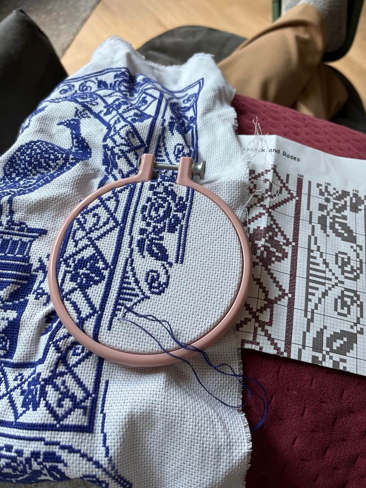
Vervolgens pakte ik het haken op. Tegelijk met mijn eerste kant-en-klaarpakketje voor borduren kocht ik er één voor haken. Die heb ik er in de tussentijd een keer erbij gepakt, maar weer weggelegd omdat het meer een cryptogram was dan een handleiding (“haak 2 v in elke tweede v”). Maar ik gaf niet op. Een half jaar later, in oktober, zette ik mijn giraf in elkaar (mede dankzij een boel YouTube-video’s). Haken is net zo leuk als borduren, maar dan vijfhonderd keer zo snel. Mijn tweede haakproject laat nog even op zich wachten, maar daar komt volgend jaar hopelijk verandering in.
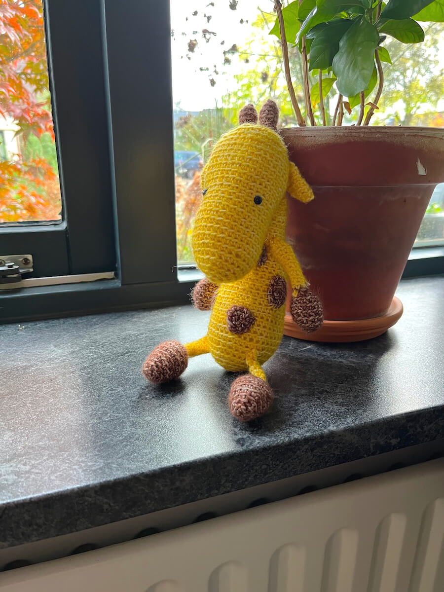
De naaicursus waar ik al ruim een anderhalf jaar voor op de wachtlijst stond, had nog steeds geen plek vrij. Ik heb best wat geduld, maar dit duurde me te lang. Dus ik ben in mijn vrije maand een online naaicursus gaan doen om de basis te leren. En dat lukte. En dat beviel me net zo goed als het borduren en haken. Onze Singer heeft sinds aanschaf (2020) niet eerder zoveel werk moeten leveren. Mijn eerste kledingstuk is ondertussen af en ik weet zeker: er gaan er nog velen komen.
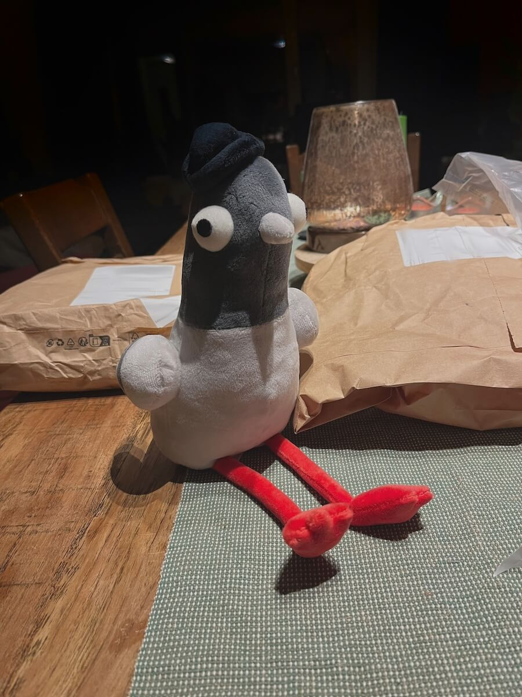
De playlist staat vol, maar ik heb het niet netjes bijgehouden. Wel is het aandeel metal gestegen in de afspeellijst, aangezien ik dit jaar KINK Distortion heb ontdekt. Maar deze bleven hangen:
Ik vond hem in eerste instantie wat tegenvallen, maar het is gaan groeien. Want wat is ‘ie goed zeg. Ik heb het natuurlijk over The Tortured Poets Department. Voor elke stemming een nieuwe favoriet, maar Guilty As Sin? blijft voor mij een magische met die bridge en dat laatste couplet.
Daarnaast ook veel geluisterd:
Ik blijf records breken: dit jaar las ik nóg minder boeken dan vorig jaar! De teller staat op 52. Het “andere hobbies zoeken”-gedeelte, wat elk jaarverslag lijkt terug te komen, vind ik dan officieel geslaagd. Een aantal favorieten dit jaar:
Aankomend jaar staat er nog vrij weinig op de planning. Ik ga naar mijn favoriete vierdaagse: Rock Werchter. Daarnaast gaan we in ieder geval druk bezig in de tuin. Met de slechte zandgrond die we hebben, ben ik benieuwd of er wat wil groeien. En of we de buurtkatten (looking at you, Bobcat en Harr Harr 👀) eruit kunnen houden. Ik ga verder met mijn handwerkhobbies, want daar heb ik tijd voor met mijn nieuwe 4-daagse werkweek. En verder? Spoiler alert: de ‘Favoriete games’-lijst lijkt terug te komen (uitgefaseerd na 2021).
Tot de volgende.
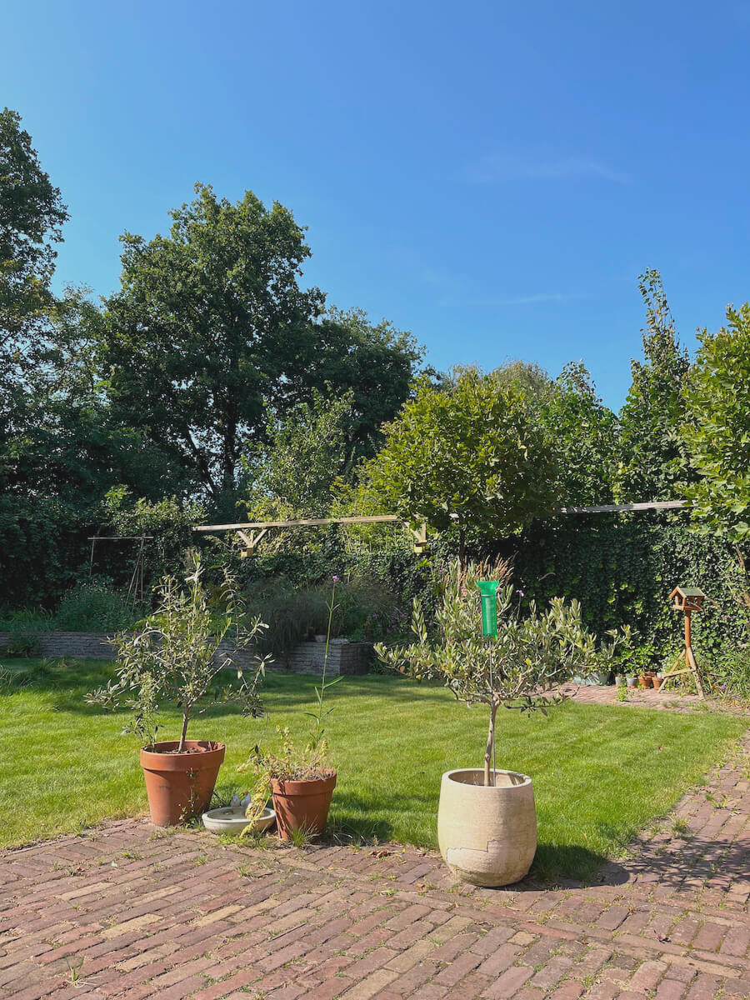